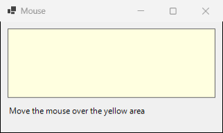

Callbacks & events
Run Ring code from .NET — as a delegate passed to a method, or as the handler of an event such as Click.
Callbacks with dnCallback()#
Pass dnCallback(code) wherever a .NET delegate is expected: Action, Func, Predicate, Comparison, EventHandler, Task continuations... The bridge builds a delegate of the exact type. When .NET invokes it, the Ring code runs, as with events in RingQt. It can read aDotNetArgs (the list of the delegate arguments) and set xDotNetResult (converted to the delegate's return type).
nTotal = 0
oList.ForEach_(dnCallback("nTotal += len(aDotNetArgs[1])")) # ForEach is a Ring keyword: ForEach_
oList.Sort_1(dnCallback("xDotNetResult = len(aDotNetArgs[1]) - len(aDotNetArgs[2])"))
oList.FindAll(dnCallback("xDotNetResult = left(aDotNetArgs[1],1) = 'a'"))A function name instead of code#
If the text is just a function name, that function is called with the argument list as its only parameter, and its return value is the result:
oList.ForEach_(dnCallback("show"))
func show aArgs
? aArgs[1]Good to know#
- The code is compiled once into a function (
dncallbackN); the same text reuses it, so a callback in a loop or timer costs nothing extra. - An error raised by the Ring code reaches the .NET caller as an exception, and then your Ring
try/catch. - Callbacks run synchronously on the Ring thread during a call. A callback fired later or from another thread (timers, tasks) is ignored with a message on stderr.
samples/UsingDotNet/test04_callbacks.ring
load "../../libraries/dotnetlib/dotnetlib.ring"
using { "System.Collections.Generic" }
oList = new StringList()
oList.Add("pear") oList.Add("apple") oList.Add("fig") oList.Add("avocado")
? "ForEach (Action<string>):"
oList.ForEach_(dnCallback("printItem"))
? "Sort by length (Comparison<string>):"
oList.Sort_1(dnCallback("compareLength"))
for cItem in oList.toList() ? " " + cItem next
? "FindAll starting with a (Predicate<string>):"
oFound = oList.FindAll(dnCallback("startsWithA"))
for cItem in oFound.toList() ? " " + cItem next
? "Exists(startsWithA) = " + oList.Exists(dnCallback("startsWithA"))
# Callbacks can be any Ring code (as in RingQt events): aDotNetArgs holds the arguments, xDotNetResult the result
nTotal = 0
oList.ForEach_(dnCallback("nTotal += len(aDotNetArgs[1])"))
? "Total letters (inline code): " + nTotal
oList.Sort_1(dnCallback("xDotNetResult = len(aDotNetArgs[2]) - len(aDotNetArgs[1])"))
? "Longest first: " + oList.Item(0)
oNums = new NumberList()
for nLoop = 1 to 6 oNums.Add(nLoop) next
? "Even numbers: " + list2str(oNums.FindAll(dnCallback("xDotNetResult = (aDotNetArgs[1] % 2 = 0)")).toList())
# Errors in the callback reach the caller
try
oList.ForEach_(dnCallback("broken"))
catch
? "Caught: " + cCatchError
done
# A callback receives ONE parameter: the list of the .NET arguments, and returns the result
func printItem aArgs
? " item: " + aArgs[1]
func compareLength aArgs
return len(aArgs[1]) - len(aArgs[2])
func startsWithA aArgs
return left(aArgs[1],1) = "a"
func broken aArgs
raise("callback failed on purpose")ForEach (Action<string>):
item: pear
item: apple
item: fig
item: avocado
Sort by length (Comparison<string>):
fig
pear
apple
avocado
FindAll starting with a (Predicate<string>):
apple
avocado
Exists(startsWithA) = 1
Total letters (inline code): 19
Longest first: avocado
Even numbers: 2
4
6
Caught: DotNet Error: System.InvalidOperationException: Ring error: callback failed on purposeEvents#
Every public .NET event gets two methods, as in RingQt: setXXXEvent(code) and clearXXXEvent(). The code runs when the event is raised and can read aDotNetArgs, which is [sender, eventArgs] (both .NET objects). Each event has one handler; setting it again replaces it.
using { "System.Collections.ObjectModel" }
oList = new ObservableStringList() {
setCollectionChangedEvent("? 'changed: ' + aDotNetArgs[2].getProp('Action')")
Add("one")
}CollectionChanged event #1
CollectionChanged event #2
CollectionChanged event #3
Events received : 3
Items : 1
(second handler)
Items : 3
action = AddClick and friends#
Windows Forms and WPF controls are events all the way down:
oButton = new Button() {
Text = "Click me"
setClickEvent("oForm.Text = 'Clicked!'")
}
oForm.Controls.Add(oButton)The same event can be set with a function name, which is cleaner for longer handlers:
oButton.setClickEvent("clicked()")
...
func clicked
nClicks++
oCount.Text = "" + nClicks + " clicks"The code of an event runs outside the function that set it up, so it can only see global variables. Create the widgets and the state of the program as globals at the top, then assign them inside func main. See Gotchas.
Mouse and keyboard events#
The event arguments are normal .NET objects:
oPicture.setMouseMoveEvent("? 'x=' + aDotNetArgs[2].X + ' y=' + aDotNetArgs[2].Y")
oForm.setKeyDownEvent("keyPressed(aDotNetArgs[2].KeyCode)")samples/Forms/16_mouse_events.ring
# Mouse position and buttons
load "../../libraries/dotnetlib/dotnetlib.ring"
dnUseDesktop()
using {
"System.Drawing"
"System.Windows.Forms"
}
oForm = uiForm("Mouse",320,160)
oArea = uiPanel(oForm,10,10,300,100)
oArea {
BackColor = uiColor("LightYellow")
BorderStyle = "FixedSingle"
}
oInfo = uiLabel(oForm,"Move the mouse over the yellow area",10,120,300,24)
oArea {
setMouseMoveEvent("moved(aDotNetArgs[2].X,aDotNetArgs[2].Y)")
setMouseDownEvent("pressed(aDotNetArgs[2].Button,aDotNetArgs[2].X,aDotNetArgs[2].Y)")
}
uiTest(oForm,"selfTest()")
uiRun(oForm)
uiEnd()
# --------------------------------------------------------------------------
func moved nX, nY
oInfo.Text = "x=" + nX + " y=" + nY
func pressed cButton, nX, nY
oInfo.Text = cButton + " button at " + nX + "," + nY
func selfTest
moved(12,34)
dnAssert("move text",oInfo.Text,"x=12 y=34")
pressed("Right",5,6)
dnAssert("press text",oInfo.Text,"Right button at 5,6")
Timers#
Timers raise Tick on the Ring thread (Windows Forms timers do; System.Threading.Timer runs on a pool thread and cannot call Ring):
oTimer = uiTimer(1000,"tick()") # the helper: every 1000 ms
oTimer.Start()Calling Ring from .NET code you wrote#
Your own assembly can call Ring as well: when a parameter is typed object, the bridge passes the callback unchanged and your code can call RingDotNet.Bridge.CallRing(callback, returnType, args). This is how the Entity Framework hooks (onSaving, onLog) and value converters are built — see Entity Framework reference.